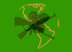

|  |
site map
|
|
|
|||
homepage |
|||
welcome and introduction animated summary world map site map
|
|||
| africa | |||
africa- distribution and exhibition senegal- distribution and exhibition africa- chronology
|
|||
FESPACI
FESPACO |
sembene (biography) sembene (films) |
||
| latin-america | |||
| india | |||
| theories | |||
| chronology | |||
| glossary | |||
| Links | |||
| contacts | |||
THIRD-WORLD THIRD-CINEMA
AFRICA
Distribution and Exhibition [aka about Senegal]
Chronology
African chronology
Contemporary Cinema
FEPACI
Sembène
Sembène – biography
Sembène – filmography
FESPACO
Xala [aka?]
Senegal – Dist. and Exhibition [aka Republic of Senegal]
CHRONOLOGY
Chronology 1945 – 1962
History
GLOSSARY
HOMEPAGE
Homepage
Mps
Third World regions
World
INDIA
Chronology
Contemporary Cinema
Parallel Cinema
Pune
LATIN AMERICA
Chronology
Latin American Chronology
Cinema Liberación
Cinema Liberación
Fernando Birri
Fernando Solanas
Solanas – films [aka Solanas el nube]
Solanas interview
Contemporary Cinema
Alavarez
Alea [aka Alvarez translated]
ICAIC
ICAIC translated
Latin America
Sanjines [aka Sanjines interview]
Translated interview
Cinema with the people [aka translated Sanjines]
Webpages
Theories
Espinosa
Espinosa
Fanon
Franz Fanon
Franz Fanon. A
Imperfect cinema
For an imperfect cinema
Model
Form & Style
Publications
Tshombe
National Consciousness
On National Consciousness
Solans & Getino
Theories
Third World
Third World
Towards Third Cinema
Towards Third Cinema
Webaddreses
Fanon
Newsreel
Network